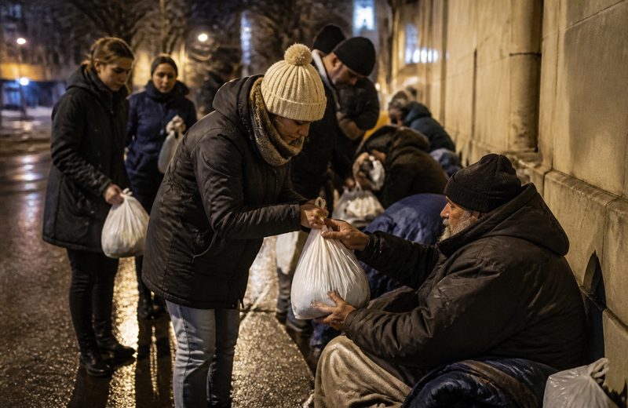
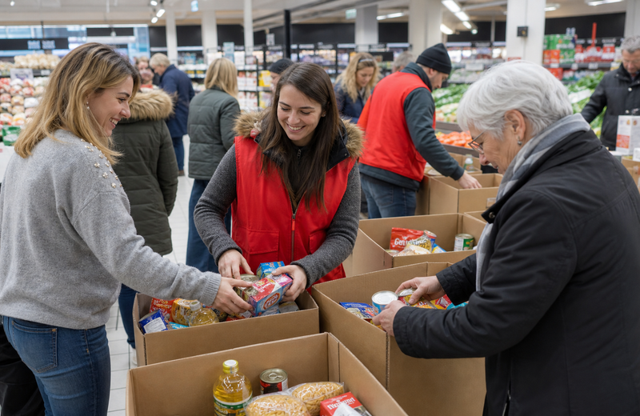
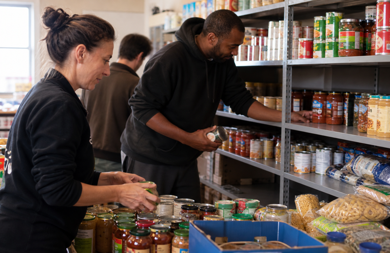
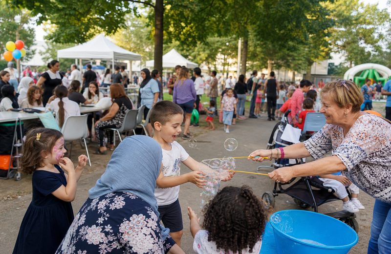

Maraude
2 h par mois — accompagnement rue et nuit d'hiver.
Bénévolat
120 citoyens engagés — 2 h par mois suffisent pour faire la différence.

2 h par mois — accompagnement rue et nuit d'hiver.

Samedis ponctuels — en magasin ou en entrepôt.
Aide aux démarches en ligne — formation 1 journée.
Formulaire en ligne — 5 minutes.
Échange de 30 min avec un référent.
Accueil et posture d'écoute — 1/2 journée.
Créneaux adaptés à votre disponibilité.
3 200 familles accompagnées — paniers adaptés et accueil bienveillant.

Parcours sur 3 à 6 mois — 68 % de retour à l'emploi en 2024.
Fêtes de quartier, cuisine partagée et maraudes hivernales.

Prêt à vous engager ?
Je m'inscris